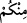

Burada “/minküm” zamiri gelecek yerde “ /men” kelimesi getirilmiş, bu şekilde,
bu sapık insanların durumu, sapık ve muhâlif düşme gerekçeleri daha belirgin bir
şekilde ifâde edilmiştir. Zîrâ “öncekilerin masalları” vs. gibi sözlerle Allah tarafından
indirilen Kur’ân’ı inkâr eden kimse Allah’a düşman ve muhâlif düşmüş, uyum ve
dostluktan da uzak kalmıştır.
Şüphesiz bu durumda olan insan ise tamamen sapıtmış demektir. Bu âyet-i kerîmeye
şöyle işârî bir mânâ verilmiştir: Kula gelen her belâ, musîbet, nimet, rahmet, sıkıntı ve
mutluluk Allah’tandır. Şâyet kul bütün bunları teslimiyet, rızâ, sabırla karşılar; zorluk,
rahatlık, mutluluk ve sıkıntı hallerinde hep Mevlâ’ya şükrederse bu kişi hidâyet üzere
olup mânen Allah’a yaklaşmış has ve hâlis kullardandır. Şâyet küfür, nankörlük, feryatla
mukâbele ederse bu kişi sapık, rahmetten uzak, şakî ve âsîlerdendir.
Hadîs-i kudsî’de şöyle gelmiştir: “Ben kullarımdan birine gerek bedeni, gerek malı,
gerekse evlâdı konusunda bir musîbet verir de kulum da bunu güzel bir sabırla
karşılarsa, ben bu kuluma kıyâmette mîzan kurup dosya açmaktan hayâ ve imtinâ
ederim”.
Hadîs-i şerîf’te şöyle vârid olmuştur: “Allah bir kulu sevdiğinde onu sınar. Eğer
ileri derecede sevgiye mazhar olmuşsa bu sefer o kula birtakım belâ ve musîbetler
vererek ağır imtihâna tâbi tutar. Şâyet bu kul bu belâ ve imtihanı sabır ve rızayla
karşılarsa, Allah bu kulu seçkin ve mümtaz kulları arasına alır.” “Yâ Rasûlallah! Bu
kulun fitne ve imtihânı nedir?” diye sorulunca, Peygamberimiz (s.a.): “Allah bu kula
âid mal ve evlâd bırakmaz” buyurdular.
Büyüklerden bazıları şöyle demiştir: Bazan nimet Allah’tan yüz çevirmeyi mucip
olur.. “İnsana nimet verdiğimiz zaman yüz çevirip yan çizer. Ona bir zarar
dokunacak olsa iyice karamsarlığa düşer.” (el-İsrâ’, 17/83) buyurulur. Bazan da
insana bir şer ve zarar dokunması, Allah’a yönelmeyi mûcip olur. Allah Teâlâ “İnsana
bir nimet verdiğimiz zaman (bizden) yüz çevirir ve yan çizer. Fakat ona bir şer
dokunduğu zaman da yalvarıp durur” (Fussılet, 41/51) buyurur.
Allah Teâlâ kulundan birtakım nimet ve sıhhati almakla ona şefkat ve merhamet
etmektedir. Çünkü nimet bazan Allah’tan yüz çevirmeye vesîle olmaktadır. Belâ dostluk
için, altına nisbetle ateş gibidir. Ateşin odunu yakıp tükettiği gibi belâ da aynı şekilde
varlık âleminde zararlı unsurları yakar, tüketir. Belâ ve musîbetler yoluyla Allah’a
ulaşmak nimet ve rahmet yoluyla ulaşmaktan daha kolaydır.
Zîrâ bütün peygamberler ve velîler hep belâ ve musîbetlerle Allah’a ulaştılar. Dünya
durdukça ateş olacağına göre, akıllı kişi, dünyada rahat beklememelidir. Zaten dünya
mihnet, meşakkat ve imtihan yurdudur. Hadîs-i şerîf’te: “Dünya müminin
zindanıdır”[56] buyrulmuştur. Öyleyse mümin, dünyada rahat değil ancak, istirahat
olduğunu bilmelidir. Bu durumda mümin fakirlik, hastalık ve zillet gibi imtihanlarla hep
iç içedir. Yani fakr u zarûret, hastalık ve birtakım belâ ve musîbetler müminin yakasını
hiç bırakmaz.